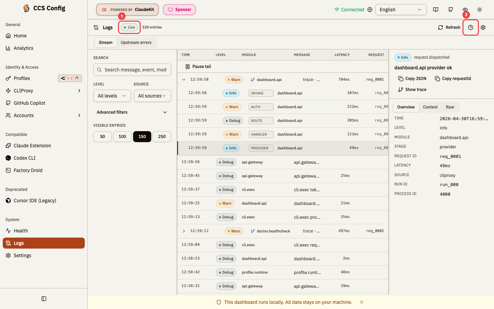
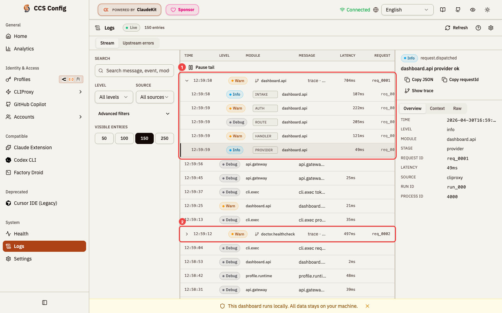
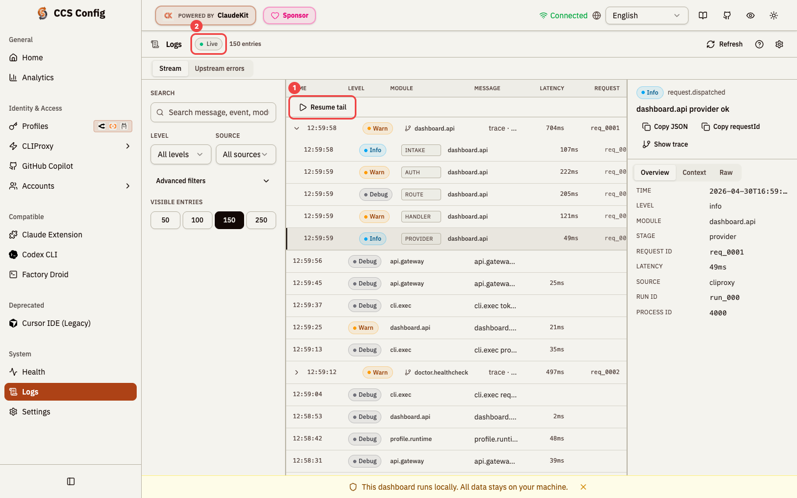
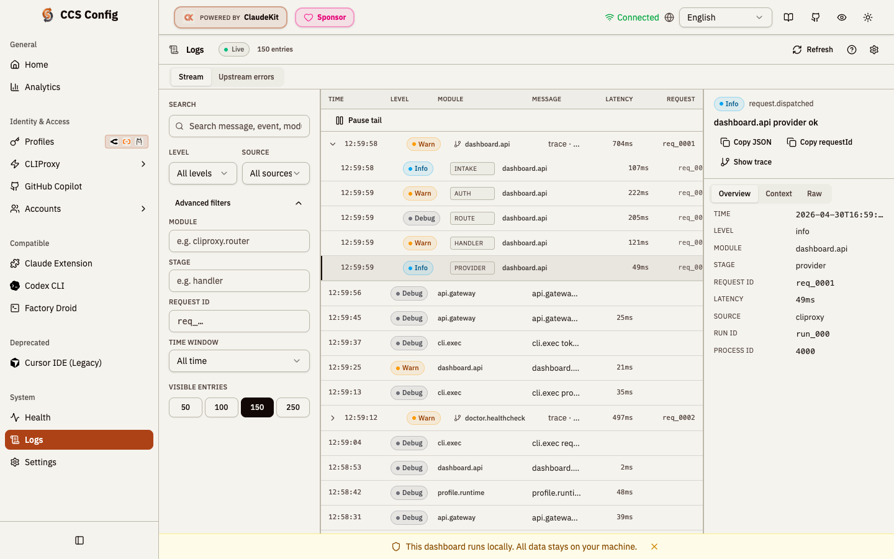
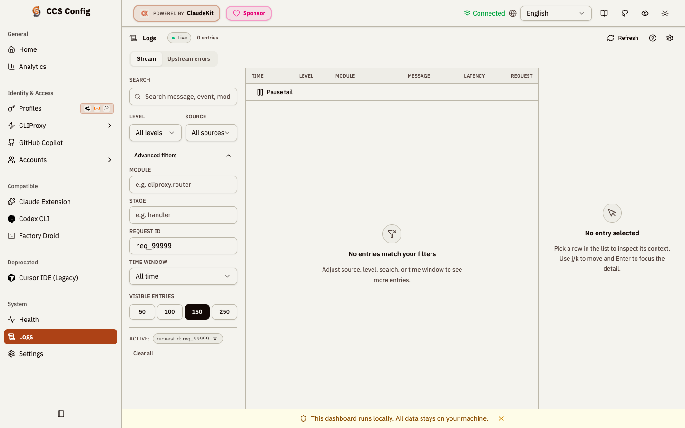
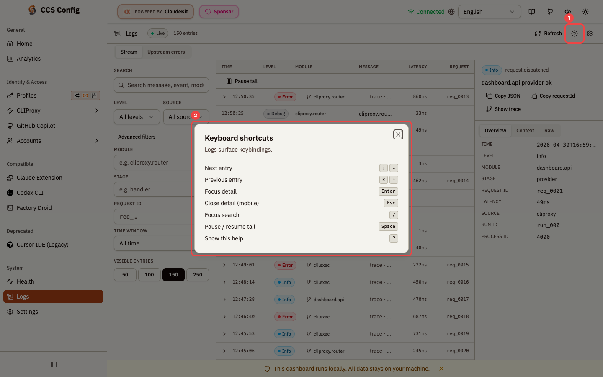
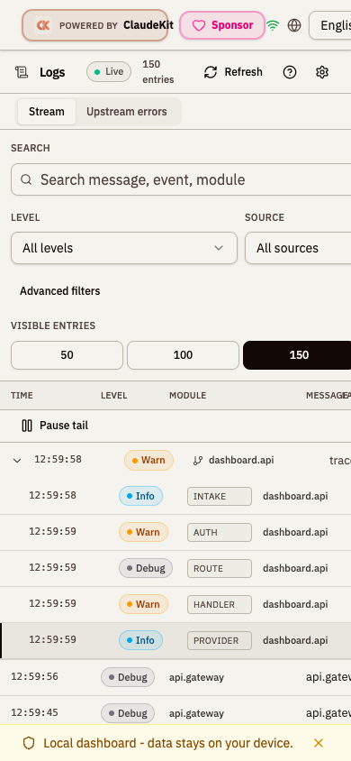

What changed
- Removed ornamental glow / radial gradients / faux-HUD copy from
logs.tsxandcomponents/logs/*. - Calm 3-pane shell on desktop, stacked + bottom-sheet on mobile.
- List virtualized via
react-virtuoso; trace-grouped rows byrequestId. - Filters split into primary (search/level/source) + advanced (module/stage/requestId/time window).
- Live-tail pause/resume with rotation-safe id-set diff for new-entries pill.
- Detail panel: Overview / Context / Raw tabs; copy JSON, copy requestId, "Show trace" jump.
- Designed states: empty (selection / no data / no results / out-of-scope) and error w/ retry.
- Keyboard:
j/k.Enter.Esc./.Space.?+ visible?button in header. - Reduced-motion respected; AA contrast tokens; visible focus rings.
1. Overview - default state

? button surfaces keyboard shortcuts dialog.2. Trace grouping

req_0001. (2) collapsed trace badge ("trace . 6 stages") with chevron - one click toggles.3. Live-tail paused

4. Advanced filters

module . stage . requestId . time window. Disclosure chevron flips on toggle. All inputs debounced 250ms; in-flight queries cancelled on filter change.5. Empty state - filtered to nothing

requestId: req_99999 matches nothing. Center pane shows centered icon + "No entries match your filters" + actionable copy. Active filter chip requestId: req_99999 with x to clear; "Clear all" link below. Right pane shows distinct "No entry selected" empty variant.6. Keyboard shortcuts dialog

? button in header. (2) dialog lists all 7 keybindings: j/arrow-down next, k/arrow-up prev, Enter focus detail, Esc close mobile, / search, Space pause/resume, ? help. Background shows the upstream-errors view with multiple error traces visible.7. Mobile - 390x844
